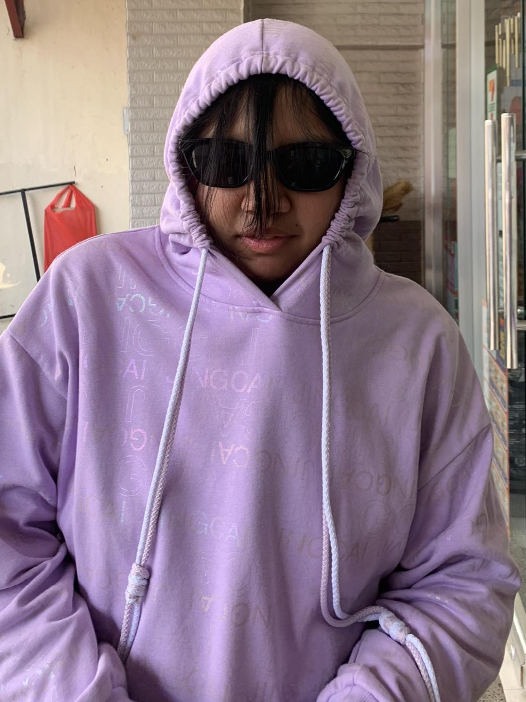

Denie Kirstine T. LiwanagStudent ContactContact
Skils
Languages
|
About meI am Denie Kirstine T. Liwanag, a dedicated BS Information Technology student at Kings College of the Philippines, currently pursuing my degree since 2024. I have hands-on experience in photo editing, videography, and office work, with strong skills in Microsoft Office and Photoshop. I am fluent in English, Filipino, and Korean, which allows me to communicate effectively in diverse environments. During the summer of 2025, I worked as a Photo Editor at APS Studio, where I gained practical experience in editing and document handling. I am passionate about technology, creative media, and continuously improving my skills to contribute meaningfully in both academic and professional settings. Job Experience
Photo Editor 2025 summer work
EducationBS in Information Technology Kings College Of the Philippines 2024 – Present ProjectProjectHobbiesHobbies |